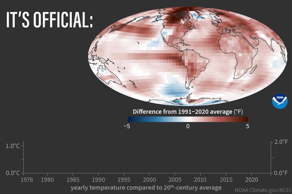
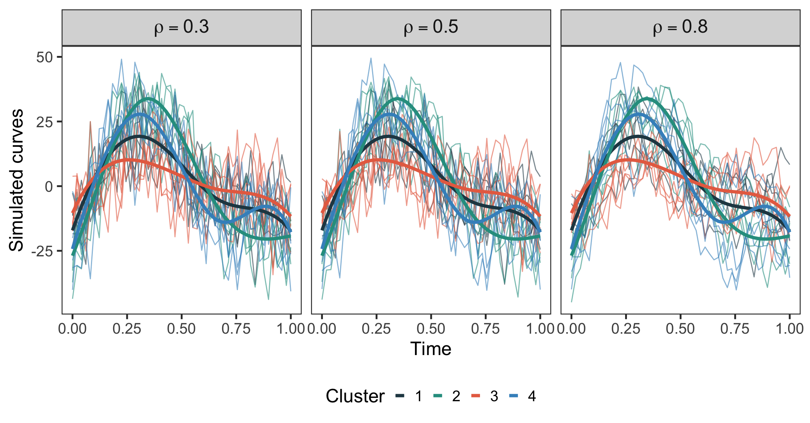
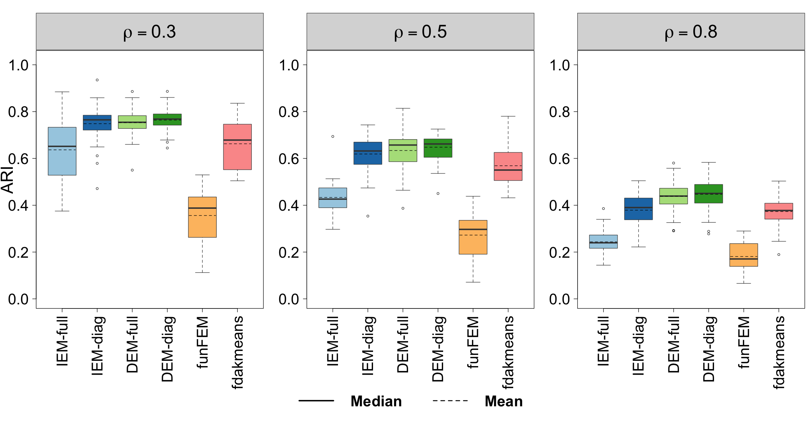
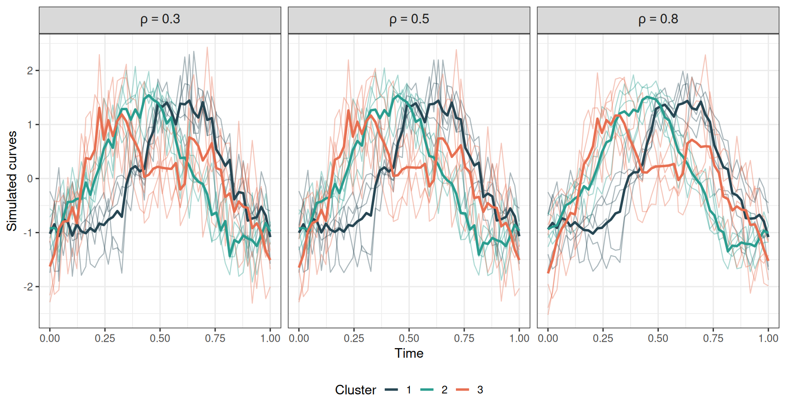
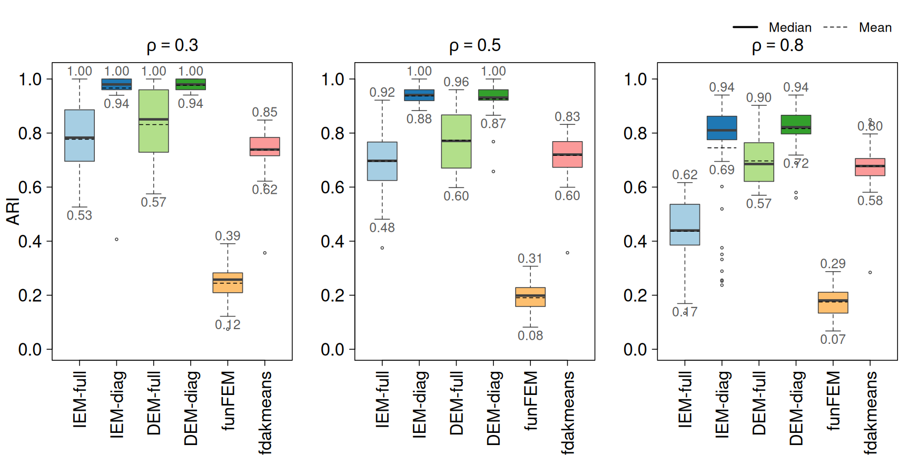
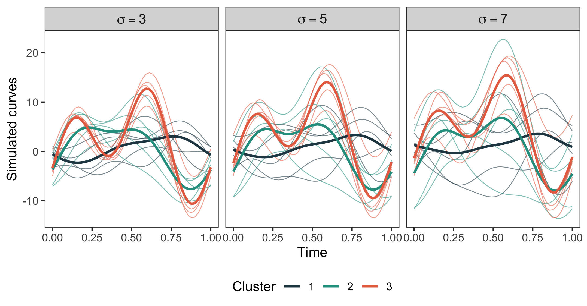
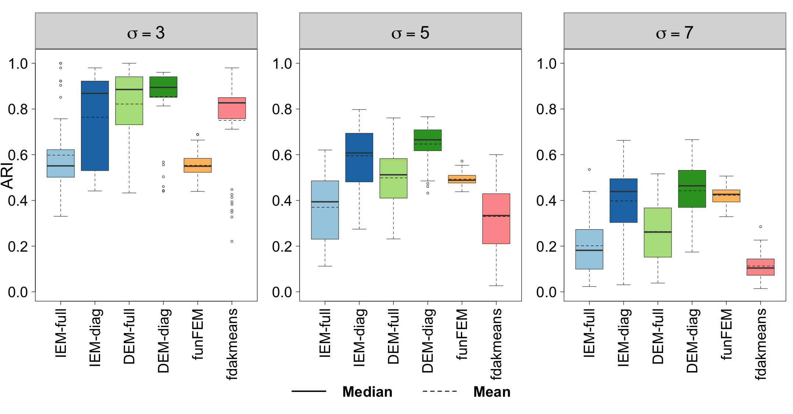
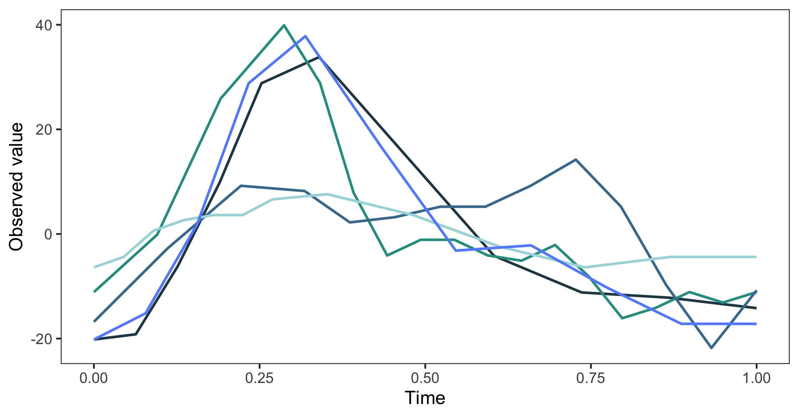
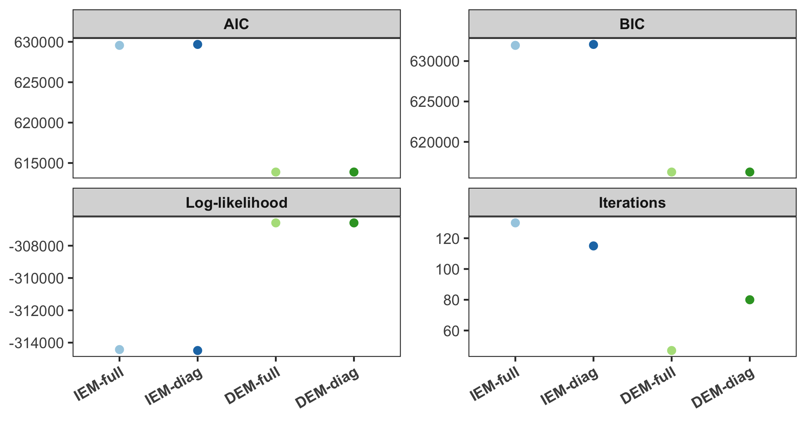
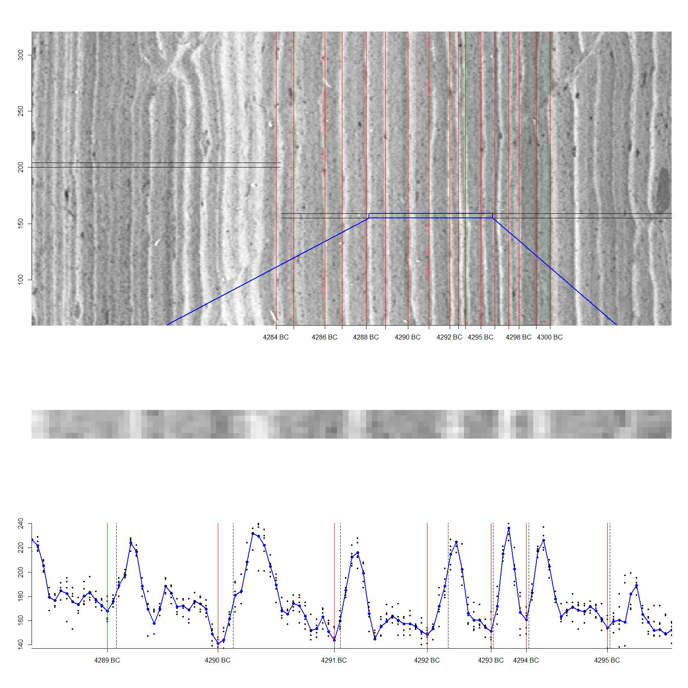

Model-Based Functional Clustering with Correlated Measurement Errors
Rana Bamdadi
Sara Sjöstedt de Luna
Per Arnqvist
Natalya Pya Arnqvist
Ruth Schneckener
Department of Mathematics and Mathematical Statistics, Umeå University
June, 2026
Rana Bamdadi
rana.bamdadi@umu.se
Outline
1. Motivation: Climate reconstruction using varved lake sediments
2. Model-based functional clustering
3. Extension to correlated measurement errors
4. Simulation studies
5. Application to Kassjön sediment data
6. Conclusions
Why Study Past Climate Variation?

Past climate information helps us understand long-term climate variability.
Climate Reconstruction Using Proxy Data
- Tree rings
- Ice cores
- Glacier dynamics
- Varved lake sediments
Model-based Functional Clustering
What is model-based clustering?
- Each cluster follows its own probability distribution
- Each observation has probabilities of belonging to clusters
- Parameters and memberships are estimated using the EM algorithm
Key idea: observations are assigned using probabilities, not only distances.
Independent Error Model (IEM) (Arnqvist & Sjöstedt de Luna (2019))
\[ y_i(t_{ij}) = g_i(t_{ij})+\epsilon_i(t_{ij}), \qquad j=1,\ldots,n_i,\quad i=1,\ldots,N \]
\(\boldsymbol{y}_i(t)\) → The observed function
\(\boldsymbol{\epsilon}_i(t)\) → \(N_{n_i}(0,\sigma^2 \mathbf{I}_{n_i})\)
\[ g_i(t) = \boldsymbol{\phi}(t)^T \boldsymbol{\eta}_i, \qquad \boldsymbol{\eta}_i = \boldsymbol{\mu}_{z_i} + \boldsymbol{\gamma}_i \sim N_p(\boldsymbol{\mu}_{z_i},\Gamma_{z_i}) \]
\(\boldsymbol{\phi}(t) = [\phi_1(t), ..., \phi_p(t)]^T\)
\(z_i \rightarrow\) The unknown cluster membership
\(\boldsymbol{\mu}_{z_i} \rightarrow\) Expected spline coefficients for a cluster
\(\Gamma_{z_i} \rightarrow\) Covariance matrix of Random effects of spline coefficients
\(\boldsymbol{\gamma}_i\rightarrow\) Subject-specific within-cluster variability
Extension to correlated measurement errors
Dependent Error Model (DEM)
The measurement error process \(\epsilon_i(t)\) is modeled as a zero-mean Gaussian process with exponential covariance
\[ \operatorname{cov}\big(\epsilon_i(t), \epsilon_i(t+h)\big) = \sigma^2 e^{-\theta |h|}. \]
For equidistant time points scaled to \([0,1], \quad t_{ij}-t_{i,j-1}=\frac{1}{n_i-1},\quad j=2,\ldots,n_i,\)
\[\boldsymbol{\epsilon}_i \sim N_{n_i}(0,\sigma^2 T_i(\rho)),\]
where \[ T_i(\rho) = \begin{pmatrix} 1 & \rho & \rho^2 & \cdots & \rho^{n_i-1}\\ \rho & 1 & \rho & \cdots & \rho^{n_i-2}\\ \vdots & \vdots & \vdots & \ddots & \vdots\\ \rho^{n_i-1} & \rho^{n_i-2} & \rho^{n_i-3} & \cdots & 1 \end{pmatrix}, \] is an AR(1)-type correlation matrix where \(\rho = e^{\frac{-\theta}{(n_i - 1)}}.\)
Our Proposed Extensions
| Model | Measurement errors | Covariance matrix of Random effects |
|---|---|---|
| IEM-full | \(\epsilon_i \sim N(0,\sigma^2 I_{n_i})\) | Full \(\Gamma_{k}\) |
| IEM-diag | \(\epsilon_i \sim N(0,\sigma^2 I_{n_i})\) | Diagonal \(\Gamma_{k}\) |
| DEM-full | \(\epsilon_i \sim N(0,\sigma^2 T_i(\rho))\) | Full \(\Gamma_{k}\) |
| DEM-diag | \(\epsilon_i \sim N(0,\sigma^2 T_i(\rho))\) | Diagonal \(\Gamma_{k}\) |
\(* \quad \gamma_i|z_i=k \sim N_p(0,\Gamma_k)\)
Simulations study
Simulation study
We compare clustering performance across three complementary simulation settings.
- Kassjön sediment-inspired simulations
Proposed realistic climate reconstruction setting based on Kassjön sediment data. (our proposed realistic setting)
- Benchmark waveform data
Standard benchmark dataset for functional clustering. Luz-López-García et al. (2015)
- Functional signal–noise simulations
Controlled functional simulations under different noise levels. Pataky (2017)
Compare six clustering methods.
Methods Compared
Proposed model-based methods
IEM-full / IEM-diag
Model-based clustering with independent measurement errors
DEM-full / DEM-diag
Model-based clustering with dependent measurement errors
Other methods
funFEM
Model-based functional clustering in a latent subspace
fdakmeans
Distance-based functional k-means clustering
ARI
\[\text{ARI}=\frac{\text{Actual}-\text{Random}}{\text{Max}-\text{Random}}, -1<\text{ARI}<1.\]
Compare four proposed models with two established functional clustering methods.
Simulated Kassjön sediment data

Clustering performance

Simulated waveform data

Clustering performance

Simulated functiona signal-to-noise ratios

Clustering performance

Application to Kassjön sediment data
Observed Kassjön sediment data

Model comparison on Kassjön sediment data

Conclusion
Conclusion
1. Modeling correlated measurement errors improves clustering performance.
2. DEM-full and DEM-diag consistently achieved the highest ARI in the simulation studies.
3. Performance decreased as noise increased, but DEM remained more robust.
4. Kassjön-inspired simulations provided a realistic climate reconstruction setting.
5. For the real Kassjön sediment data, DEM gave better model fit and faster convergence.
Key takeaway: Accounting for correlated measurement errors improves functional clustering.
Thank you for listening!
Rana Bamdadi
Umeå University
rana.bamdadi@umu.se

- Sedimentation is formed by mineral and organic material.
- In Lake Kassjön, sediment accumulates by about 0.77 mm per year .
- About 5 meters of sediment cores were collected from the lake bottom.
- The dataset contains roughly 6,400 annual profiles (one profile = one year).
- Each annual layer is converted into a grey-scale profile (pixel values range from 0 to 255).
Seasonal interpretation
Spring: snowmelt → mineral input → bright layer
Summer: organic material → darker layer
Winter: fine organic deposition → thin dark layer

Kassjön-inspired simulation
Goal
- Mimic a realistic climate reconstruction scenario based on Kassjön sediment data
Data generation
- 4 clusters with 50 curves per cluster, and 50 observations in each curve
- Cluster-specific parameters estimated from real Kassjön data
- Curves generated using B-spline basis functions, \(\boldsymbol{g}_i(t)\)
- Correlated measurement errors added, \(\boldsymbol{\epsilon}_i(t)\)
-
Observed functional data, \(\boldsymbol{y}_i(t)=\boldsymbol{g}_i(t)+\boldsymbol{\epsilon}_i(t)\)
Simulation settings
- Number of B-spline, \(p = 6\)
- Autocorrelation, \(\rho \in \{0.3, 0.5, 0.8\}\)
- Noise level, \(\sigma =10\)
- Monte Carlo replications, \(M=50\)
Evaluation
- Compare six clustering methods
- Performance measured using Adjusted Rand Index (ARI)
↓
↓
←
Waveform simulation
Goal
- Use a standard benchmark setting for functional clustering
Data generation
- 3 clusters with 50 curves per cluster, and 50 observations in each curve
- Curves generated from three waveform basis functions
- Cluster-specific curves built by mixing 3 basis functions
- Correlated measurement errors added
- Each curve is standardized
Simulation settings
- Autocorrelation, \(\rho \in \{0.3, 0.5, 0.8\}\)
- Noise level, \(\sigma =0.7\)
- Monte Carlo replications, \(M=50\)
Evaluation
- Compare six clustering methods
- Performance measured using Adjusted Rand Index (ARI)
↓
↓
←
Functiona signal-to-noise ratios simulation
Goal
- Use a standard benchmark setting for functional clustering
Data generation
- 3 clusters with 50 curves per cluster, and 50 observations in each curve
- Curves generated using sinusoidal basis functions
- Add cluster-level and curve-level random effects to create variability
- Smooth correlated Gaussian noise added
- Observed functional data
Simulation settings
- Noise level, \(\sigma \in \{3, 5, 7\}\)
- Monte Carlo replications, \(M=50\)
Evaluation
- Compare six clustering methods
- Performance measured using Adjusted Rand Index (ARI)
↓
↓
←